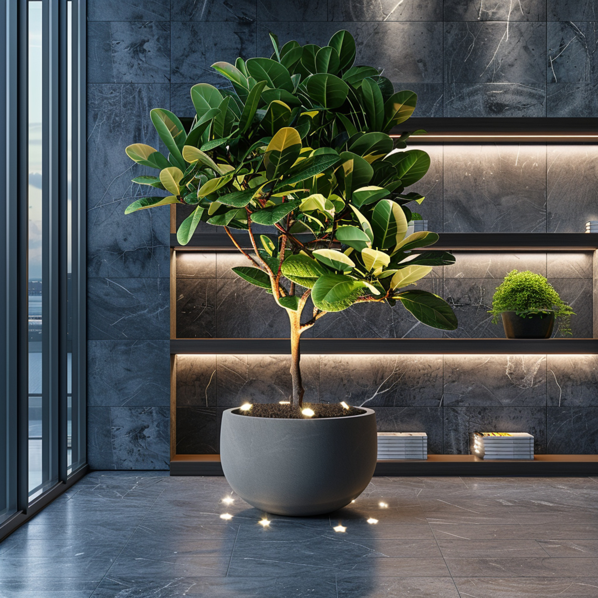
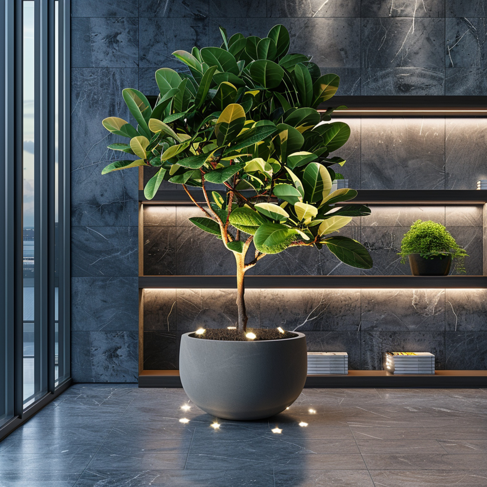

O Ficus Lyrata, também conhecido como Figueira-lira, é uma planta elegante que se destaca em qualquer ambiente. Com suas grandes folhas verdes brilhantes, é perfeita para interiores e requer cuidados moderados.
Altura: cerca de 1,2 metros.
Necessita de luz indireta e regas regulares
sem encharcamento.
 
